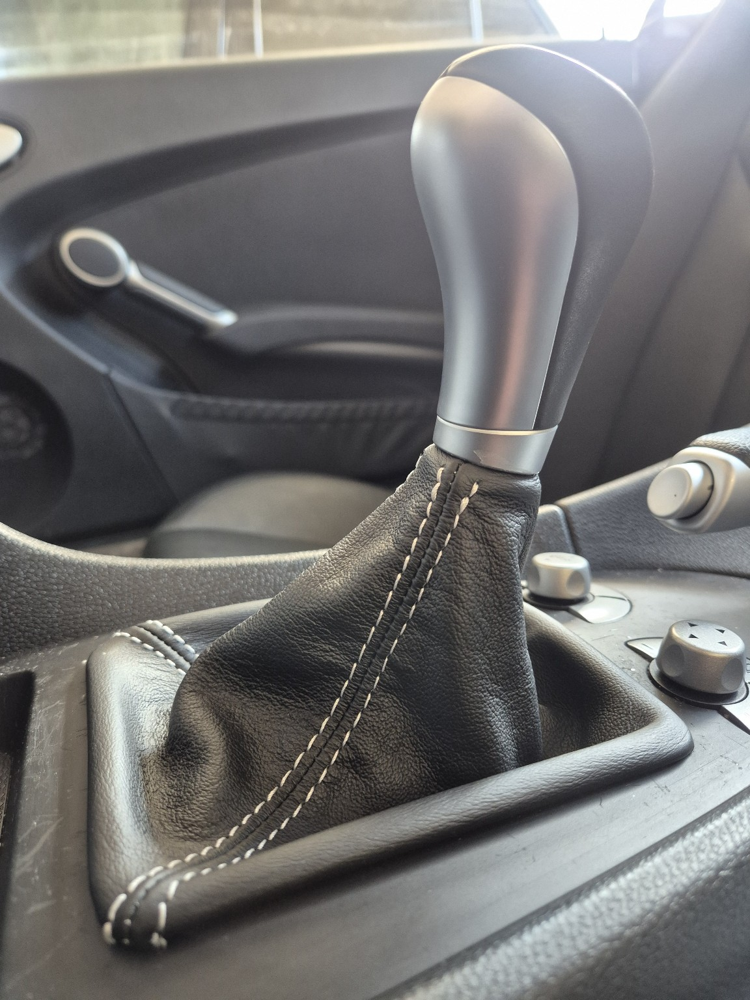

Schaltsack aus Leder erneuert
April 2025
Der originale Schaltsack war nach 16 Jahren rissig und spröde. Ich habe ihn gegen einen hochwertigen Lederschaltsack aus Italien ersetzt. Bezogen bei iartepelle, Einbau in Eigenregie mit Kontaktkleber. Das Ergebnis ist optisch und haptisch deutlich wertiger.

Dachgummis & Türdichtungen gepflegt
April 2025
Behandlung aller Dach- und Türdichtungen mit Krytox zur Erhaltung der Elastizität und Dichtheit. Empfehlung: mindestens 1x jährlich anwenden.
Großer Wartungsservice durchgeführt
24. April 2025
Folgende Arbeiten wurden in der Werkstatt erledigt:
- Getriebeölwechsel
- Differenzialölwechsel
- Servolenkungsflüssigkeit erneuert
- Kühlmittel erneuert
- Kompressoröl gewechselt
- Benzinfilter ersetzt
- Zündkerzen erneuert